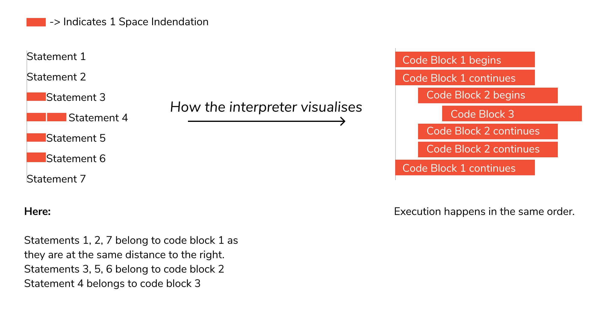
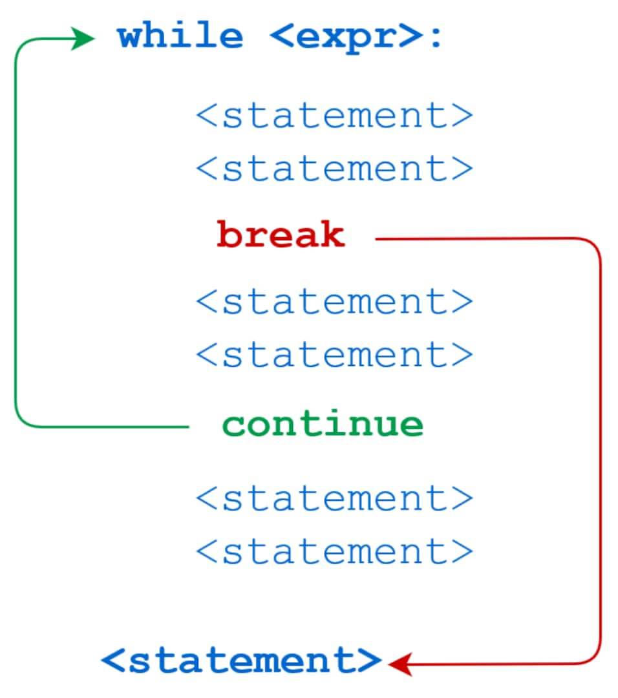

Syntax and Symantics#
After installing Python, basics thing to understand is about syntax and semantics of Python.
Hello, World!#
Let’s create a very simple program called Hello World. This simple statement will print Hello, World! on the screen.
print("Hello World")
# 1. print is a function
# 2. Hello World is an argument
Hello World
Keywords#
Keywords are the reserved words in Python.
We cannot use a keyword as a variable name, function name or any other identifier.
In Python, keywords are case sensitive.
All the keywords except True, False and None are in lowercase and they must be written as they are. The list of all the keywords is given below.
Keywords in Python
|
|
|
|
|
|
|
|
|
|
|
|
|
|
|
|
|
|
|
|
|
|
|
|
|
|
|
|
|
|
|
|
|
|
|
|
for = 6 # It will give error becasue "for" is keyword and we cannot use as a variable name.
Cell In[3], line 1
for = 6 # It will give error becasue "for" is keyword and we cannot use as a variable name.
^
SyntaxError: invalid syntax
Identifiers#
An identifier is a name given to entities like class, functions, variables, etc. It helps to differentiate one entity from another.
Rules for writing identifiers#
Identifiers can be a combination of letters in lowercase (a to z) or uppercase (A to Z) or digits (0 to 9) or an underscore
_.An identifier cannot start with a digit.
1variableis invalid, butvariable1is perfectly fine.Keywords cannot be used as identifiers
global = 3 # because "global" is a keyword
^
SyntaxError: invalid syntax
We cannot use special symbols like !, @, #, $, % , etc. in our identifier.
m@ = 3
^
SyntaxError: invalid syntax
Indentation#
No spaces or tab characters allowed at the start of a statement: Indentation plays a special role in Python.
{kind=link}
Most of the programming languages like C, C++, and Java use braces { } to define a block of code. Python, however, uses indentation.
A comparison of C & Python will help you understand it better.
{kind=link}
Variables#
A variable is a named location used to store data in the memory. It is helpful to think of variables as a container that holds data that can be changed later in the program.
In Python, we don't actually assign values to the variables. Instead, Python gives the reference of the object(value) to the variable.
In Python, we don’t need to specify the type of variable because Python is a type infer language and smart enough to get variable type.
Python Variable Name Rules
A variable name must start with a letter
A-zor the underscore_characterA variable name cannot start with a number
0-9A variable name can only contain alpha-numeric characters and underscores (
A-z,0-9, and_)Variable names are case-sensitive (
firstname,Firstname,FirstNameandFIRSTNAME) are different variables). It is recomended to use lowercase letters for variable name.
# Assigining numerical values
number = 90
number = 9.1
number
9.1
# Assigning string values
string = "Hello World"
print(string)
Hello World
# Assigning multiple values
a, b, c = 1, 2, 3
print(a)
print(b)
print(c)
1
2
3
Type conversions#
In python, we can convert one data type to another data type.
# Converting string to integer
a = "10"
b = int(a)
print(b)
10
We can use the
type()function to know which class a variable or a value belongs to.
# using type() function
a = 10
b = 10.0
c = "10"
d = "10.0"
print(type(a))
print(type(b))
print(type(c))
print(type(d))
<class 'int'>
<class 'float'>
<class 'str'>
<class 'str'>
Data types#
Every value in Python has a datatype. Since everything is an object in Python programming, data types are actually classes and variables are instance (object) of these classes.
Numbers#
Integers
Floating point numbers
Complex numbers
a = 6
print(a, "is of type", type(a))
print(a, "is integer number?", isinstance(5,int))
a = 3.0
print(a, "is of type", type(a))
print(a, "is float number?", isinstance(2.0,float))
a = 1+2j # '1' is real part and '2j' is imaginary part
print(a, "is of type", type(a))
print(a, "is complex number?", isinstance(1+2j,complex))
6 is of type <class 'int'>
6 is integer number? True
3.0 is of type <class 'float'>
3.0 is float number? True
(1+2j) is of type <class 'complex'>
(1+2j) is complex number? True
List [ ]#
List is an ordered sequence of items.
All the items in a list do not need to be of the same type
Can also include duplicate items.
List is mutable. We can add, remove or modify items in the list.
>>>a = [1, 3.3, 'python']
We can use the slicing operator [ ] to extract an item or a range of items from a list. The index starts from 0 in Python.
x = [6, 99, 77, 'Apple']
print(x, "is of type", type(x))
[6, 99, 77, 'Apple'] is of type <class 'list'>
Example
a = [5, 10, 15, 20, 25, 30, 35, 40] # Total elemnets is 8
# [0 1 2 3 4 5 6 7] ⬅ Index forward
# [-8 -7 -6 -5 -4 -3 -2 -1] ➡ Index backward
# index '0' is element '1' = 5,
# index '1' is element '2' = 10,
# index '2' is element '3' = 15,
# .
# .
# .
# index '7' is element '8' = 40,
a[1] # To access the elements in the list
# a[2] = 15
print("a[2] = ", a[2])
# a[0:3] = [5, 10, 15]
print("a[0:3] = ", a[0:3]) # [0:3] means elements from 0 uptil 2 index (not include last element)
# [0:3] means from index 0 to 3 - 1
# [0:3] means from index 0 to 2
# a[5:] = [30, 35, 40] # [5:] means all the elements from 5 till end
print("a[5:] = ", a[5:])
# a[5:-2] = [30] #[5:-2] means all the elements from 5 till second last
print(f"a[5:-2] = {a[5:-2]}")
a[2] = 15
a[0:3] = [5, 10, 15]
a[5:] = [30, 35, 40]
a[5:-2] = [30]
Tuple ( )#
Tuple is an ordered sequence of items same as a list.
Tuples are immutable. Tuples once created cannot be modified.
Tuples are used to write-protect data and are usually faster than lists as they cannot change dynamically.
It is defined within parentheses () where items are separated by commas.
>>>t = (6,'program', 1+3j)
# Tuple 't' have 3 elements
t = (6,'program', 1+3j)
# (0 1 2) ➡ Index forward
# index '0' is element '1'= 6
# index '1' is element '2'= program
# index '2' is elemtnt '3'= 1+3j
# t[1] = 'program'
print("t[1] = ", t[1])
# t[0:3] = (6, 'program', (1+3j))
print("t[0:3] = ", t[0:3])
# Generates error
# Tuples are immutable
t[0] = 10 # trying to change element 0 from '6' to '10' will throw error
t[1] = program
t[0:3] = (6, 'program', (1+3j))
---------------------------------------------------------------------------
TypeError Traceback (most recent call last)
Cell In[13], line 17
13 print("t[0:3] = ", t[0:3])
15 # Generates error
16 # Tuples are immutable
---> 17 t[0] = 10 # trying to change element 0 from '6' to '10' will throw error
TypeError: 'tuple' object does not support item assignment
Strings#
String is sequence of Unicode characters. We can use single quotes or double quotes to represent strings.
Multi-line strings can be denoted using triple quotes, ''' or """.
s = "This is a string" # s is my variable
print(s)
s = '''A multiline
string'''
print(s)
This is a string
A multiline
string
Just like a list and tuple, the slicing operator [ ] can be used with strings. Strings, however, are immutable.
s = 'Hello world!' # total 12 elements. Index start from '0' to '11'
# s[4] = 'o'
print("s[4] = ", s[4])
# s[6:11] = 'world' # index '6' to '11' means element from 6 to 10
print("s[6:11] = ", s[6:11])
s[4] = o
s[6:11] = world
Set { }#
Set is an unordered collection of unique items.
Set is defined by values separated by comma inside braces
{ }.Items in a set are not ordered.
a = {7,1,3,6,9}
# printing set variable
print("a = ", a)
# data type of variable a
print(type(a))
a = {1, 3, 6, 7, 9}
<class 'set'>
We can perform set operations like union, intersection on two sets. Sets have unique values. They eliminate duplicates.
a = {1,2,2,3,3,3} # we can see total 6 elements
print(a)
{1, 2, 3}
Since, set are unordered collection, indexing has no meaning. Hence, the slicing operator [] does not work.
a = {1,2,3} # in Set data type we cannot access the elements because set is unordered collection
a[1] # Index [1] means element 2
---------------------------------------------------------------------------
TypeError Traceback (most recent call last)
Cell In[19], line 2
1 a = {1,2,3} # in Set data type we cannot access the elements because set is unordered collection
----> 2 a[1] # Index [1] means element 2
TypeError: 'set' object is not subscriptable
Dictionary { }#
Dictionary is an unordered collection of key-value pairs.
It is generally used when we have a huge amount of data. Dictionaries are optimized for retrieving data. We must know the key to retrieve the value.
In Python, dictionaries are defined within braces
{}with each item being a pair in the form key:value. Key and value can be of any type.
d = {1: 'Apple', 2: 'Cat', 3: 'Food'} # 'Apple' is element and 1 is the key of element.
print(d, type(d))
d[3]
{1: 'Apple', 2: 'Cat', 3: 'Food'} <class 'dict'>
'Food'
Operators#
Operators are special symbols in Python that carry out arithmetic or logical computation. The value that the operator operates on is called the operand.
Arithmatic#
Arithmetic operators are used to perform mathematical operations like addition, subtraction, multiplication etc.
Symbol |
Task Performed |
Meaning |
Example |
|---|---|---|---|
|
Addition |
add two operands or unary plus |
x + y or +2 |
|
Subtraction |
substract right operand from the left or unary minus |
x - y or -2 |
|
Multiplication |
Multiply two operands |
x * y |
|
Division |
Divide left operand by the right one (always results into float) |
x / y |
|
Modulus (remainder) |
remainder of the division of left operand by the right |
x % y (remainder of x/y) |
|
Integer/Floor division |
division that results into whole number adjusted to the left in the number line |
x // y |
|
Exponentiation (power) |
left operand raised to the power of right |
x ** y (x to the power y) |
Comparison/Relational#
Comparison operators are used to compare values. It either returns True or False according to the condition.
Symbol |
Task Performed |
Meaning |
Example |
|---|---|---|---|
|
greater than |
True if left operand is greater than the right |
x > y |
|
less than |
True if left operand is less than the right |
x < y |
|
equal to |
True if both operands are equal |
x == y |
|
not equal to |
True if both operands are not equal |
x != y |
|
greater than or equal to |
True if left operand is greater than or equal to the right |
x >= y |
|
less than or equal to |
True if left operand is less than or equal to the right |
x <= y |
Logical/Boolean#
Logical operators are the and, or, not operators.
Symbol |
Meaning |
Example |
|---|---|---|
|
True if both the operands are true |
x and y |
|
True if either of the operand is true |
x or y |
|
True if operand are false (complements the operand) |
not x |
Bitwise#
Bitwise operators act on operands as if they were string of binary digits. It operates bit by bit, hence the name.
For example: 2 is 10 in binary and 7 is 111.
In the table below: Let x = 10 (0000 1010 in binary) and y = 4 (0000 0100 in binary)
Operator |
Meaning |
Symbol |
Task Performed |
Example |
|---|---|---|---|---|
|
Logical and |
|
Bitwise And |
x & y = 0 ( |
|
Logical or |
\(\mid\) |
Bitwise OR |
x | y = 14 ( |
|
Not |
|
Bitwise NOT |
~x = -11 ( |
  |
  |
|
Bitwise XOR |
x ^ y = 14 ( |
  |
  |
|
Bitwise right shift |
x >> 2 = 2 ( |
  |
  |
|
Bitwise left shift |
x << 2 = 40 ( |
Assignment#
Assignment operators are used in Python to assign values to variables.
a = 5 is a simple assignment operator that assigns the value 5 on the right to the variable a on the left.
There are various compound operators in Python like a += 5 that adds to the variable and later assigns the same. It is equivalent to a = a + 5.
Symbol |
Example |
Equivalent to |
|---|---|---|
|
x = 5 |
x = 5 |
|
x += 5 |
x = x + 5 |
|
x -= 5 |
x = x - 5 |
|
x *= 5 |
x = x * 5 |
|
x /= 5 |
x = x / 5 |
|
x %= 5 |
x = x % 5 |
|
x //= 5 |
x = x // 5 |
|
x **= 5 |
x = x ** 5 |
|
x &= 5 |
x = x & 5 |
|
x |= 5 |
x = x | 5 |
|
x ^= 5 |
x = x ^ 5 |
|
x >>= 5 |
x = x >> 5 |
|
x <<= 5 |
x = x << 5 |
Special operators#
Python language offers some special types of operators like the identity operator or the membership operator.
Symbol |
Meaning |
Example |
|---|---|---|
|
True if the operands are identical (refer to the same object) |
x is True |
|
True if the operands are not identical (do not refer to the same object) |
x is not True |
|
True if value/variable is found in sequence |
5 in x |
|
True if value/variable is not found in sequence |
5 not in x |
Namespaces & Scope#
What is Name in Python?
Name (also called identifier) is simply a name given to objects. Everything in Python is an object. Name is a way to access the underlying object.
For example, when we do the assignment a = 2, 2 is an object stored in memory and a is the name we associate it with.
# Note: You may get different values for the id
a = 2
print('id(a) =', id(a))
a = a+1
print('id(a) =', id(a))
print('id(3) =', id(3))
b = 2
print('id(b) =', id(b))
print('id(2) =', id(2))
id(a) = 4334066392
id(a) = 4334066424
id(3) = 4334066424
id(b) = 4334066392
id(2) = 4334066392
What is happening in the above sequence of steps? Let’s use a diagram to explain this:
Memory diagram of variables in Python:

Initially, an object
2is created and the name a is associated with it,When we do
a = a+1, a new object3is created and now a is associated with this object.Note that
id(a)andid(3)have the same values.Furthermore, when
b = 2is executed, the new namebgets associated with the previous object2.üí° Note: This is efficient as Python does not have to create a new duplicate object. This dynamic nature of name binding makes Python powerful; a name could refer to any type of object.Namespace#
Namespace is a collection of names.
In Python, you can imagine a namespace as a mapping of every name you have defined to corresponding objects.
Different namespaces can co-exist at a given time but are completely isolated.
A namespace containing all the built-in names is created when we start the Python interpreter and exists as long as the interpreter runs.
This is the reason that built-in functions like
id(),print()etc. are always available to us from any part of the program. Each module creates its own global namespace.These different namespaces are isolated. Hence, the same name that may exist in different modules do not collide.
Modules can have various functions and classes. A local namespace is created when a function is called, which has all the names defined in it. Similar, is the case with class. Following diagram may help to clarify this concept.
<img src=“images/ns2.png” width=“300” alt=”namespace/>
Variable Scope#
A scope is the portion of a program from where a namespace can be accessed directly without any prefix.
At any given moment, there are at least three nested scopes.
Scope of the current function which has local names
Scope of the module which has global names
Outermost scope which has built-in names
When a reference is made inside a function, the name is searched in the local namespace, then in the global namespace and finally in the built-in namespace.
If there is a function inside another function, a new scope is nested inside the local scope.
Example of Scope and Namespace in Python
>>>def outer_function(): >>> b = 30 >>> def inner_func(): >>> c = 60 >>>a = 90
Here,
the variable
ais in the global namespace.Variable
bis in the local namespace ofouter_function()andcis in the nested local namespace ofinner_function().
cis local toinner_function()bis nonlocal andais global.
We can read as well as assign new values to
cbut can only readbandafrominner_function().If we try to assign as a value to
b, a new variablebis created in the local namespace which is different than the nonlocalb. The same thing happens when we assign a value toa.However, if we declare
aas global, all the reference and assignment go to the globala.Similarly, if we want to rebind the variable
b, it must be declared as nonlocal. The following example will further clarify this.def outer_function(): a = 30 def inner_function(): a = 60 print('a =', a) inner_function() print('a =', a) a = 90 outer_function() print('a =', a)
a = 60 a = 30 a = 90
Control flow#
The flow control statements are divided into three categories:
Conditional statements
Iterative statements
Transfer/Control statements
<img src=“images/fcs.png” width=“500” alt=”control-flow/>
If statement#
Syntax
if(condition): statement 1 statement 2 statement n
# Example: If the number is positive, we print an appropriate message num = 3 if (num > 0): # if condition is TRUE: enter the body of if print(num, "is a positive number.") print("This is always printed.") num = -1 if num > 0: # if condition is FALSE: do not enter the body of if print(num, "is a negative number.") print("This is also always printed.")
3 is a positive number. This is always printed. This is also always printed.
If-else statement#
Syntax
if condition: statement 1 else: statement 2
x = 1 if x > 3: print ("Case 1") if x <= 3: print ("Case 2")
Case 2
If-elif-else statement#
Syntax
if condition-1: statement 1 elif condition-2: stetement 2 elif condition-3: stetement 3 ... else: statement
# Example: '''In this program, we check if the number is positive or negative or zero and display an appropriate message''' num = 0 # Try these two variations as well: # num = 0 # num = -4.5 if num > 0: print("Positive number") elif num == 0: print("Zero") else: print("Negative number")
Zero
Nested if statement#
Syntax
if condition1: if condition2: statement else: statement else: statement
# Example 1: a=10 if a>=20: # Condition FALSE print ("Condition is True") else: # Code will go to ELSE body if a>=15: # Condition FALSE print ("Checking second value") else: # Code will go to ELSE body print ("All Conditions are false")
All Conditions are false
For loop#
Syntax
for element in sequence: body of for loop
First,
elementis the variable that takes the value of the item inside the sequence on each iteration.Second, all the
statementsin the body of the for loop are executed with the same value. The body of for loop is separated from the rest of the code using indentation.Finally, loop continues until we reach the last item in the
sequence. The body of for loop is separated from the rest of the code using indentation.
# Example 1: For loop words = ['one', 'two', 'three', 'four', 'five'] for i in words: print(i)
one two three four five
For loop with
range()#The range() function returns a sequence of numbers starting from 0 (by default) if the initial limit is not specified and it increments by 1 (by default) until a final limit is reached.
The
range()function is used with a loop to specify the range (how many times) the code block will be executed.We can generate a sequence of numbers using
range()function.range(5)will generate numbers from 0 to 4 (5 numbers).We can also define the start, stop and step size as
range(start, stop,step_size).step_sizedefaults to 1 if not provided.# Example 1: How range works in Python? # empty range print(list(range(0))) # using range(stop) print(list(range(10))) # using range(start, stop) print(list(range(1, 10)))
[] [0, 1, 2, 3, 4, 5, 6, 7, 8, 9] [1, 2, 3, 4, 5, 6, 7, 8, 9]
# Example 2: for i in range (2, 12, 2): # beginning 2 with distance of 2 and stop before 12 print (i)
2 4 6 8 10
For loop with list#
# Example: Iterate over a list Method 1 numbers = [1, 2, 3, 6, 9] for num in numbers: print(num)
1 2 3 6 9
For loop with tuple#
# Example 1: For loop with tuple numbers = (0, 1, 2, 3, 4, 5) for number in numbers: print(number)
0 1 2 3 4 5
For loop with dictionary#
# Example 1: Iterting only keys dict1 = {"Antibiotics": "Penicillin", "Inventor": "Fleming", "Year": 1928} for key in dict1: print(key)
Antibiotics Inventor Year
# Example 2: For loop with dictionary #Looping through a dictionary gives you the key of the dictionary. person = { 'first_name':'Anukool', 'last_name':'chaturvedi', 'age':1000, 'country':'Finland', 'is_marred':True, 'skills':['Python', 'Matlab', 'R', 'C', 'C++'], 'address':{ 'street':'Space street', 'zipcode':'02210' } } for key in person: print(key) print('\n') for key, value in person.items(): print(key, value) # this way we get both keys and values printed out
first_name last_name age country is_marred skills address first_name Anukool last_name chaturvedi age 1000 country Finland is_marred True skills ['Python', 'Matlab', 'R', 'C', 'C++'] address {'street': 'Space street', 'zipcode': '02210'}For loop with set#
# Example 6: For loop with set mix_fruits = {'Banana', 'Apple', 'Mango', 'Orange', 'Guava', 'Kiwi', 'Grape','Apple'} for fruits in mix_fruits: print(fruits)
Apple Kiwi Guava Mango Grape Orange Banana
List comprehension#
Syntax
[expression for item in iterable]
List comprehension is an elegant and concise way to create lists. List comprehension is considerably faster than processing a list using the
for loop.The
expressionis executed for each item in theiterable.The
itemis the variable that takes the value of the item inside theiterableon each iteration.The
iterableis the sequence that theexpressionis executed on.
# Example: Print the even numbers by adding 1 to the odd numbers in the list odd = [1, 5, 7, 9] even = [i + 1 for i in odd if i % 2 == 1] print(even)
[2, 6, 8, 10]
While loop#
The
whileloop in Python is used to iterate over a block of code as long as the expression/condition isTrue. When the condition becomesFalse, execution comes out of the loop immediately, and the first statement after thewhileloop is executed.We generally use this loop when we don’t know the number of times to iterate beforehand.
Python interprets any non-zero value as
True.Noneand0are interpreted asFalse.Syntax
while condition: body of while loop
In the
whileloop, expression/condition is checked first.The body of the loop is entered only if the expression/condition evaluates to
True.After one iteration, the expression/condition is checked again. This process continues until the test_expression evaluates to
False.
Note: An infinite loop occurs when a program keeps executing within one loop, never leaving it. To exit out of infinite loops on the command line, press CTRL + C.
# Example 1: Print numbers less than 5 count = 1 # run loop till count is less than 5 while count < 5: print(count) count = count + 1
1 2 3 4
Control statements#
Loops in Python are used to iterate repeatedly over a block of code. But at times, you might want to shift the control once a particular condition is satisfied.
Control statements in python are used to control the flow of execution of the program based on the specified conditions. Python supports 3 types of control statements:
Statement
Description
1
breakTerminate the current loop. Use the
breakstatement to come out of the loop instantly.2
continueSkip the current iteration of a loop and move to the next iteration
3
passDo nothing. Ignore the condition in which it occurred and proceed to run the program as usual
The
breakandcontinuestatements are part of a control flow statements that helps you to understand the basics of Python.Break#
breakstatement provides you with the opportunity to exit out of a loop when an external condition is triggered, and the program control transfer to the next statement following the loop.If the
breakstatement is inside a nested loop (loop inside another loop), thebreakstatement will terminate the innermost loop.You’ll put the
breakstatement within the block of code under your loop statement.The working of
breakstatement inforloop andwhileloop is shown below.# Example 1: for i in range(100): print(i,end="...") if i>=10: break print("completed.")
0...1...2...3...4...5...6...7...8...9...10...completed.
# Example 2: program to check if letter 'A' is present in the input a = input ("Enter a word: ") for i in a: if (i == 'A'): print ("A is found") break else: print ("A not found") # Note: Python is case-sensitive language.
A not found
Continue#
In Python, the
continuestatement is a jump statement which is used to skip execution of current iteration. After skipping, loopcontinuewith next iteration. We can usecontinuestatement only with for loop as well as while loop in Python.The working of
continuestatement inforloop andwhileloop is shown below.<img src=“images/con2.png” width=“700” alt=”continue1/>
# Example 1: use the `continue` statement inside a `while` loop name = 'Art hu r' size = len(name) i = -1 # iterate loop till the last character while i < size - 1: i = i + 1 # skip loop body if current character is space if name[i].isspace(): continue # print current character print(name[i], end=' ')
A r t h u r
# Example 2: count = 0 while count < 10: count += 1 if count % 2 == 0: # even number count += 2 continue elif 5 < count < 9: break # abnormal exit if we get here! print("count =",count) else: # while-else print("Normal exit with",count)
count = 1 count = 5 count = 9 Normal exit with 12
Pass#
passkeyword is used to execute nothing; it means, when we don’t want to execute code, the pass can be used to execute empty.It is used as a placeholder for future implementation of functions, loops, etc.
Suppose we have a loop or a function that is not implemented yet, but we want to implement it in the future. They cannot have an empty body. The interpreter would give an error. So, we use the
passstatement to construct a body that does nothing.Example:#
'''pass is just a placeholder for functionality to be added later.''' >>> sequence = {'p', 'a', 's', 's'} >>> for val in sequence: >>> pass
We can do the same thing in an empty function or class as well.
>>> def function(args): >>> pass
or
>>> class Example: >>> pass
# Example 1: months = ['January', 'June', 'March', 'April'] for mon in months: pass print(months)
['January', 'June', 'March', 'April']
{kind=link}
{kind=link}
{kind=link}
{kind=link}
{kind=link}
{kind=link}
{kind=link}
{kind=link}
{kind=link}
{kind=link}
Comments#
Comments are used to add notes to your code. Comments are ignored by the Python interpreter.
Single-line comments#
Single-line comments start with
#and end with the end of the line.# This is single line commentMulti-line comments#
Multi-line comments start with
'''and end with'''.Docstrings#
A docstring is short for documentation string.
Triple quotes are used while writing docstrings. For example:
Docstrings appear right after the definition of a function, class, or a module.
The docstrings are associated with the object as their
__doc__attribute.So, we can access the docstrings of the above function with the following lines of code: